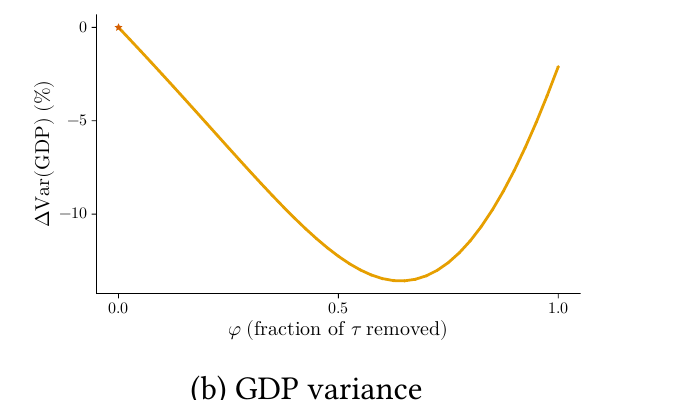

The Micro Effects of Aggregate Shocks in Endogenous Trade Networks

This paper studies how trade liberalization affects aggregate risk. I develop a multi-country model where firms choose suppliers trading off cost against risk. Calibrating to Long-WIOD data, I find that openness and risk are non-monotone: moderate liberalization reduces GDP variance through diversification, but when trade barriers are sufficiently low, production concentrates sourcing in productive central suppliers, raising efficiency but amplifying shock propagation and aggregate risk. In addition, under incomplete markets, firms price the risk against domestic rather than world conditions, generating inefficiencies in the production network.